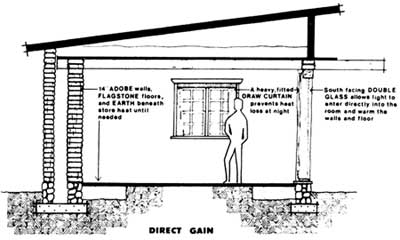

CONTROL UNIT: This house?and all the others in the Sundwellings Project?is constructed of adobe (which stores heat well but which is not a good insulator) and has a double north wall filled with 10 inches of pumice to retard heat loss. Pumice is also used for perimeter insulation, and the building's ceiling is insulated with 10 inches of sawdust. Although it contains no special solar features, this is a good example of an energy-conserving building.